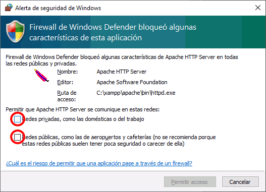
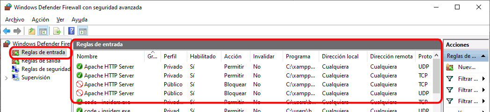
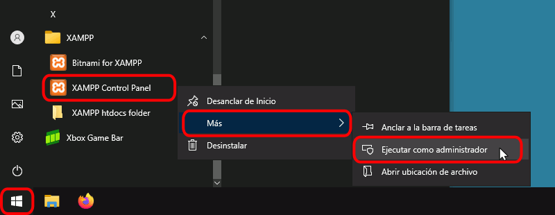
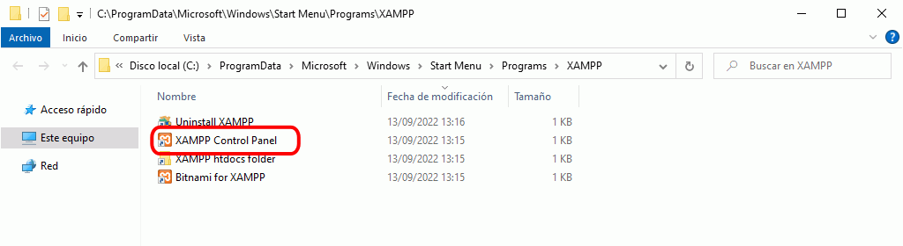
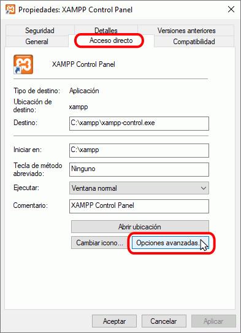
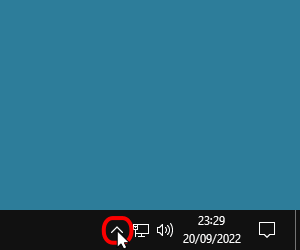
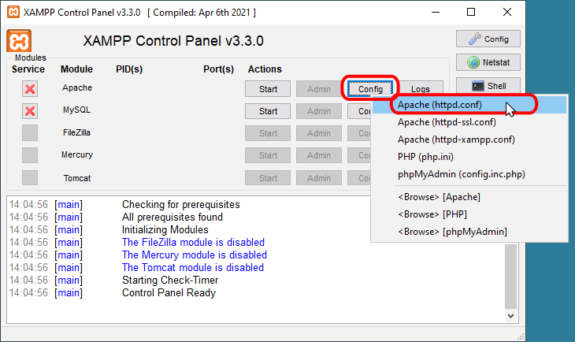
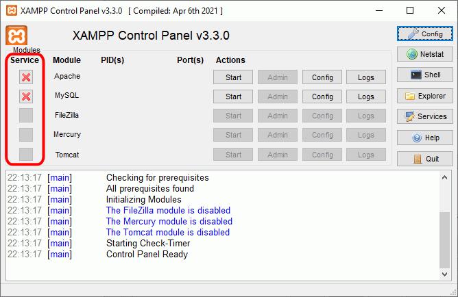
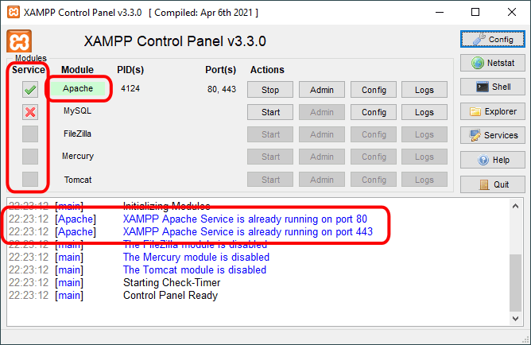
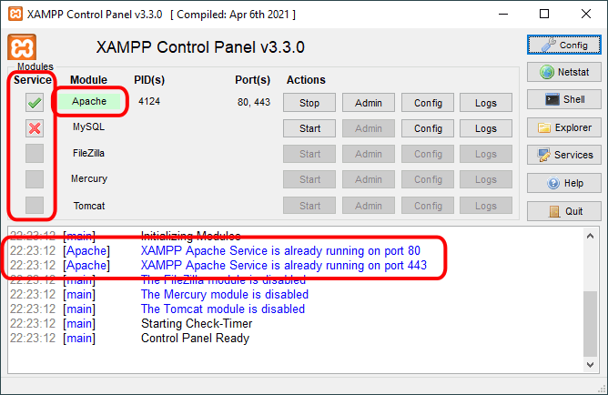

En esta lección se explica la Instalación y el uso de XAMPP en Windows. Las capturas corresponden a la instalación de XAMPP 8.2.12 en Windows 10.
El cortafuegos de Windows
El cortafuegos de Windows es el encargado de filtrar las peticiones exteriores a nuestro equipo, por ejemplo cuando desde el navegador de otro ordenador de la red local en la que nos encontramos alguien quiere abrir páginas alojadas en nuestro servidor.
El cortafuegos de Windows filtra las conexiones de acuerdo con las reglas de entrada que haya establecidas. Por ello, cuando se pone en marcha por primera vez cualquiera de los servidores que instala XAMPP, el cortafuegos de Windows pregunta al usuario si quiere autorizar o no las conexiones desde el exterior para ese servidor en concreto (Apache, MariaDB, etc.) .
Así, la primera vez que se pone en marcha Apache después de la instalación mediante el botón Start correspondiente ...

... el cortafuegos de Windows pregunta al usuario en qué perfiles de red (privado o público) se permitirá que Apache se comunique con otros equipos. Si lo permitimos (marcando la casilla), otros equipos de la misma red local podrán ver páginas en nuestro servidor, pero si no lo permitimos (dejando la casilla sin marcar), las peticiones del exterior no llegarán al servidor.

Para saber qué perfil es necesario autorizar, tendremos que saber qué perfil estamos utilizando. Para ello, tenemos que abrir la aplicación Configuración > Red e Internet y hacer clic en Propiedades de Ethernet:
Se abrirá la pantalla del perfil de red, en la que podremos ver si nuestro perfil de red es público o privado:
En principio, sería suficiente con autorizar el perfil que tengamos seleccionado (sea este público o privado):
Tenga en cuenta que si autoriza únicamente uno de los dos perfiles y posteriormente cambia el perfil de red, el cortafuegos de Windows no le preguntará si autoriza el acceso a este perfil hasta que no se reinicie Apache. Lógicamente, si autorizamos ambos perfiles, Apache será siempre accesible independientemente del perfil.
Tenga en cuenta también que la ventana que solicita autorización crea siempre reglas de entrada en el cortafuegos para el perfil de red actual. Si se marca la casilla y se permite el acceso, se creará una regla permitiendo el acceso, pero si la casilla se desmarca o si se cancela o cierra la ventana, se creará una regla denegando el acceso.
Si el arranque de Apache tiene éxito, el panel de control mostrará el nombre del módulo con fondo verde, su identificador de proceso, los puertos abiertos (http y https), el botón "Start" se convertirá en el botón "Stop" y en la zona de notificación se verá el resultado de las operaciones realizadas.

Si se abre el programa "Windows Defender Firewall con seguridad avanzada", en el apartado de Reglas de entrada se pueden ver las nuevas reglas añadidas (una para cada protocolo, TCP o UDP).
Tenga en cuenta que el cortafuegos de Windows sólo mostrará la ventana solicitando autorización la primera vez que se inicie Apache en un perfil de red para el que no se hayan establecido anteriormente las reglas de entrada. Si posteriormente se desean modificar o eliminar las autorizaciones, tendremos que hacerlo con el programa "Windows Defender Firewall con seguridad avanzada".
Abriendo el programa "Windows Defender Firewall con seguridad avanzada", en el apartado de Reglas de entrada podremos ver las reglas de Apache que bloquean el acceso a nuestro perfil de red.

Para permitir una conexión que estaba bloqueada, basta con hacer clic derecho sobre la regla, elegir en el menú contextual la opción Propiedades y en la pestaña General hacer clic en Permitir la conexión y en Aceptar.
Todo este proceso ocurre también con el resto de servidores, por ejemplo con el servidor de bases de datos MySQL/MariaDB que se instala con XAMPP.
Así, la primera vez que se pone en marcha la base de datos después de la instalación mediante el botón Start correspondiente ...
... se muestra el aviso del cortafuegos de Windows que pregunta al usuario en qué perfiles de red (privado o público) se permitirá que la base de datos se comunique con otros equipos.
Si el arranque del servidor de bases de datos tiene éxito, el panel de control mostrará el nombre del módulo con fondo verde, su identificador de proceso, el puerto abierto, el botón "Start" se convertirá en el botón "Stop" y en la zona de notificación se verá el resultado de las operaciones realizadas.
Problemas en Windows 10 tras la instalación
Icono de acceso directo del Panel de control
Parece ser que algunas veces el instalador de XAMPP no consigue crear la carpeta XAMPP del menú inicio con los iconos de acceso directo. [Referencias: foro de xampp mensaje 14/05/19 y mensaje 29/05/19]. Por ello, una vez completada la instalación, compruebe si se ha creado la carpeta en el menú de inicio, como muestra la imagen siguiente:
Si no se ha creado, abra el explorador de archivos, abra el directorio de instalación de XAMPP (en principio, C:\xampp\), haga clic derecho sobre el programa xampp-control.exe y elija la opción "Anclar a inicio" o "Anclar a la barra de tareas". Se añadirá un icono al menú de inicio (o a la barra de tareas) que permite abrir el panel de control de XAMPP.
Permisos del archivo C:\xampp\xampp-control.ini
 En abril de 2020 se hizo pública una vulnerabilidad en el panel de control de XAMPP. Un atacante podía modificar el fichero xampp-control.ini y cambiar qué programa se ejecuta cuando se arranca un servidor desde el panel de control de XAMPP. La solución inmediata tomada por el equipo de desarrollo de XAMPP fue restringir los permisos de edición de ese fichero a los usuarios administradores.
En abril de 2020 se hizo pública una vulnerabilidad en el panel de control de XAMPP. Un atacante podía modificar el fichero xampp-control.ini y cambiar qué programa se ejecuta cuando se arranca un servidor desde el panel de control de XAMPP. La solución inmediata tomada por el equipo de desarrollo de XAMPP fue restringir los permisos de edición de ese fichero a los usuarios administradores.
Aunque esa solución corrige la vulnerabilidad, el problema es que si el usuario que abre el panel de control de XAMPP no es administrador, cuando se cierra el panel de control se produce un error puesto que la aplicación intenta escribir en el archivo .ini para el que no tiene permisos.
Si en fichero C:\xampp\xampp-control.ini no tiene los permisos adecuados, al salir del panel de control se producirá un error de acceso a ese archivo.
Si cierra estas ventanas haciendo clic en Aceptar, las ventanas vuelve a aparecer una y otra vez, por lo que es necesario finalizar el proceso. Para ello:
- haga clic derecho en la barra de inicio ...
- y elija la opción "Administrador de tareas".
- Se abrirá la ventana del Administrador de tareas. Haga clic derecho en xampp-control.exe ...
- y elija la opción "Finalizar tarea".
Este problema se puede sortear, a la espera de que los programadores de XAMPP encuentren una mejor solución, aunque eso suponga estar expuesto a la vulnerabilidad comentada antes. Dos maneras de sortear el problema son:
- Ejecutar el panel de control como administrador. Se puede hacer de dos maneras:
-
Cada vez que quiera ejecutar el panel de control, haga clic en el icono de acceso directo del panel de control y elija la opción Más > Ejecutar como administrador.

- Para que el panel de control de control se ejecute siempre como administrador, ...
- haga clic en el icono de acceso directo del panel de control y elija la opción Más > Abrir la ubicación del archivo.

- Cuando se abra el explorador, ...

- haga clic derecho en el icono de acceso directo, ...
- en la pestaña "Acceso directo" elija la opción "Opciones avanzadas", ...

- marque la casilla "Ejecutar como administrador" y haga clic en Aceptar.
- Otra forma de sortear el problema es cambiar los permisos del archivo xampp-control.ini de manera que no se necesite ser administrador. Para ello, haga clic derecho en el archivo xampp-control.ini y en la pestaña Seguridad, haga clic en el botón Editar y conceda todos los permisos al grupo Todos. Esta solución no es nada recomendable, pues significaría mantener la vulnerabilidad en nuestro ordenador.
Referencia: Consulta en el foro de XAMPP en septiembre de 2020
El Panel de Control de XAMPP
Abrir y cerrar el panel de control
Al panel de control de XAMPP se puede acceder mediante el menú de inicio "Todos los programas > XAMPP > XAMPP Control Panel" o, si ya está iniciado, mediante el icono del área de notificación.
El panel de control de XAMPP se divide en tres zonas:
- la zona de módulos, que indica para cada uno de los módulos de XAMPP: si está instalado como servicio, su nombre, el identificador de proceso, el puerto utilizado e incluye unos botones para iniciar y detener los procesos, administrarlos, editar los archivos de configuración y abrir los archivos de registro de actividad.
- la zona de notificación, en la que XAMPP informa del éxito o fracaso de las acciones realizadas
- la zona de utilidades, para acceder rápidamente

Para cerrar el panel de control de XAMPP hay que hacer clic en el botón Quit (al cerrar el panel de control no se detienen los servidores):
El botón Cerrar en forma de aspa no cierra realmente el panel de control, sólo lo minimiza:
Si se ha minimizado el panel de control de XAMPP, se puede volver a mostrar haciendo doble clic en el icono de XAMPP del área de notificación.


Haciendo clic derecho en el icono de XAMPP del área de notificación se muestra un menú que permite mostrar u ocultar el panel de control, arrancar o detener servidores o cerrar el panel de control.

Se pueden abrir varios paneles de control simultáneamente y cualquiera de ellos puede iniciar o detener los servidores, pero no es aconsejable hacerlo ya que puede dar lugar a confusiones (por ejemplo, al detener un servidor desde un panel de control los otros paneles de control interpretan la detención como un fallo inesperado y muestran un mensaje de error).
Iniciar servidores
Para poner en funcionamiento Apache (u otro servidor), hay que hacer clic en el botón "Start" correspondiente:
Si el arranque de Apache tiene éxito, el panel de control mostrará el nombre del módulo con fondo verde, su identificador de proceso, los puertos abiertos (http y https), el botón "Start" se convertirá en un botón "Stop" y en la zona de notificación se verá el resultado de las operaciones realizadas.

Detener servidores
Para detener Apache (u otro servidor), hay que hacer clic en el botón "Stop" correspondiente a Apache.

Si la parada de Apache tiene éxito, el panel de control mostrará el nombre del módulo con fondo gris, sin identificador de proceso ni puertos abiertos (http y https), el botón "Stop" se convertirá en un botón "Start" y en la zona de notificación se verá el resultado de las operaciones realizadas.

Para reiniciar de nuevo Apache habría que volver a hace clic en el botón "Start" correspondiente a Apache.
Nota:
- A veces es necesario detener y reiniciar los servidores. Por ejemplo, los archivos de configuración de Apache se cargan al iniciar Apache. Si se modifica un archivo de configuración de Apache (httpd.conf, php.ini u otro) mientras Apache está en marcha, para recargar los archivos de configuración es necesario detener y reiniciar el servidor Apache.
- Si al modificar el archivo de configuración hemos introducido errores, el servidor no será capaz de iniciarse. Si no sabemos encontrar el origen del problema, se recomienda restaurar los archivos de configuración originales, de los que se aconseja tener una copia de seguridad.
Editar archivos de configuración de Apache o PHP
Los dos archivos principales de configuración son los archivos httpd.conf (Apache) y php.ini (PHP). Para editarlos se puede utilizar el panel de control de XAMPP, que los abre directamente en el bloc de notas. Para ello hay que hacer clic en el botón "Config" correspondiente a Apache y hacer clic en el archivo que se quiere editar.


El la lección Configuración de Apache y PHP se comentan algunas opciones de configuración importantes.
Ejecutar el panel de control como administrador
Para ejecutar el panel de control como administrador, se puede hacer clic derecho sobre el icono de acceso directo (Inicio > XAMPP > XAMPP Control Panel) y elegir la opción "Más > Ejecutar como administrador".
Instalar los servidores como servicios
Si queremos instalar un servidor como servicio, es decir, que se ponga en marcha cada vez que arrancamos el ordenador, hay que marcar la casilla Service correspondiente. Para ello, es necesario iniciar XAMPP como administrador.
Iniciando XAMPP como administrador, las casillas de la columna Service muestran el estado de los servicios:

Para instalar un servicio, haga clic en la casilla Service correspondiente:

Se mostrará una ventana de confirmación. Para instalar el servicio, haga clic en Yes:
Si el servicio se instala correctamente, se indicará en el panel inferior y se mostrará una marca verde en la columna Service:

Al reiniciar el ordenador, tanto si se hace como administrador como si no, el panel de control de XAMPP indica los servicios arrancados. La columna Service sólo mostrará los iconos si se ha iniciado como administrador.
 

Si queremos desinstalar un servidor como servicio, es decir, que no se ponga en marcha cada vez que arrancamos el ordenador, hay que desmarcar la casilla Service correspondiente. Para ello, es necesario iniciar XAMPP como administrador.
Para eliminar un servicio, haga clic en la casilla Service correspondiente:

Se mostrará una ventana de aviso, que indica que para desinstalar un servicio, antes debe detenerse el servidor. Haga clic en OK para continuar:

Detenga el servidor haciendo clic en el botón Stop correspondiente:

Una vez detenido el servidor, haga clic en la casilla Service correspondiente:

Se mostrará una ventana de confirmación. Para deinstalar el servicio, haga clic en Yes:

Si el servicio se desinstala correctamente, se indicará en el panel inferior y se mostrará una marca roja en la columna Service: